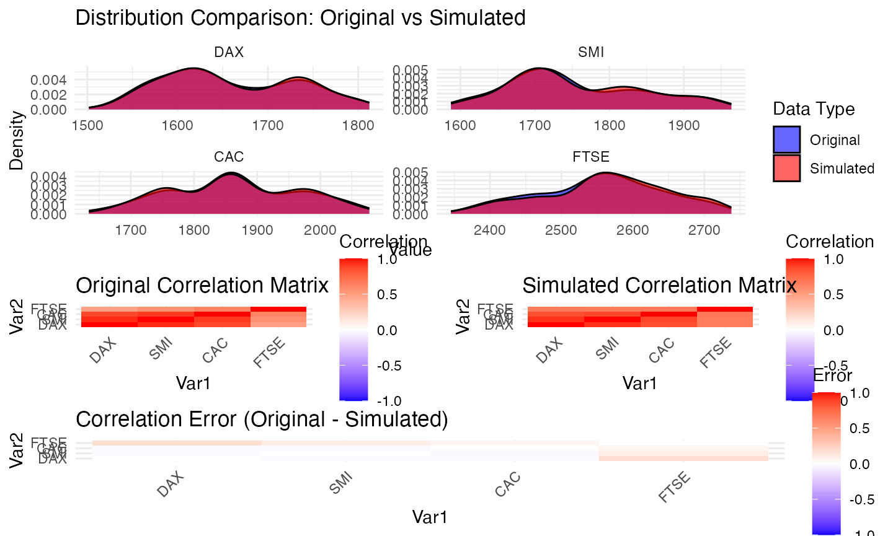

## Loading required package: ggplot2## Loading required package: gridExtra## Loading required package: reshape2## Loading required package: VineCopula## Loading required package: randtoolbox## Loading required package: rngWELL## This is randtoolbox. For an overview, type 'help("randtoolbox")'.## Loading required package: zoo##
## Attaching package: 'zoo'## The following objects are masked from 'package:base':
##
## as.Date, as.Date.numeric## Loading required package: data.table##
## Attaching package: 'data.table'## The following objects are masked from 'package:zoo':
##
## yearmon, yearqtr## The following objects are masked from 'package:reshape2':
##
## dcast, melt##
##
## This is version 1.8.0 of esgtoolkit. Starting with 1.0.0, package renamed as: 'esgtoolkit' (lowercase)
##
##
y <- EuStockMarkets[1:250, ]
# Run simulation
result <- simulate_rvine(y, n = 300, verbose = TRUE, n_trials = 5)## Transforming data to uniform margins with improved boundary handling...## Fitting R-vine copula model...## V1 + V3 --> V1,V3 ; V2## V2 + V4 --> V2,V4 ; V3## V1 + V4 --> V1,V4 ; V3,V2## R-vine copula model fitted successfully## tree edge | family cop par par2 | tau utd ltd
## ------------------------------------------------------------
## 1 2,1 | 5 F 16.91 0.00 | 0.79 - -
## 3,2 | 9 BB7 4.18 1.74 | 0.70 0.82 0.67
## 4,3 | 19 SBB7 1.80 1.26 | 0.50 0.58 0.53
## 2 3,1;2 | 2 t 0.18 2.74 | 0.11 0.19 0.19
## 4,2;3 | 13 SC 0.23 0.00 | 0.10 0.05 -
## 3 4,1;3,2 | 13 SC 0.20 0.00 | 0.09 0.03 -
## ---
## type: D-vine logLik: 595.34 AIC: -1172.68 BIC: -1140.99
## ---
## 1 <-> V1, 2 <-> V2, 3 <-> V3, 4 <-> V4 tree edge family cop par par2 tau utd ltd
## 1 1 4,3 19 SBB7 1.8013403 1.256235 0.50242484 0.57593221 0.5306866
## 2 1 3,2 9 BB7 4.1797300 1.740122 0.70055786 0.81962121 0.6714387
## 3 1 2,1 5 F 16.9079788 0.000000 0.78638157 0.00000000 0.0000000
## 4 2 4,2;3 13 SC 0.2309033 0.000000 0.10350217 0.04969290 0.0000000
## 5 2 3,1;2 2 t 0.1759103 2.740196 0.11257372 0.18566694 0.1856669
## 6 3 4,1;3,2 13 SC 0.1974467 0.000000 0.08985277 0.02988036 0.0000000## Running 5 simulation trials...## Best simulation achieved quality score: 0.0363## Score weights used: [0.4, 0.2, 0.2, 0.1, 0.1]## Mean absolute correlation error (Kendall): 0.0415## Mean absolute correlation error (Pearson): 0.0489
# Print summary
print(result)## R-vine Copula Simulation Results
## ================================
##
## Original observations: 250
## Variables: 4
## Simulated observations: 300
## Quality score: 0.0363
## Successful trials: 5/5
## Mean absolute correlation error (Kendall): 0.0415
## Mean absolute correlation error (Pearson): 0.0489
##
## Use plot() to visualize results and $diagnostics for detailed metrics.
# Create different types of plots
plot(result, type = "distribution") # Default
plot(result, type = "correlation")
plot(result, type = "both")
# Access detailed diagnostics
str(result$diagnostics)## List of 24
## $ original_correlation_tau : num [1:4, 1:4] 1 0.801 0.67 0.333 0.801 ...
## ..- attr(*, "dimnames")=List of 2
## .. ..$ : chr [1:4] "DAX" "SMI" "CAC" "FTSE"
## .. ..$ : chr [1:4] "DAX" "SMI" "CAC" "FTSE"
## $ simulated_correlation_tau : num [1:4, 1:4] 1 0.8 0.666 0.474 0.8 ...
## ..- attr(*, "dimnames")=List of 2
## .. ..$ : chr [1:4] "DAX" "SMI" "CAC" "FTSE"
## .. ..$ : chr [1:4] "DAX" "SMI" "CAC" "FTSE"
## $ correlation_error_tau : num [1:4, 1:4] 0 -0.000753 -0.004057 0.140903 -0.000753 ...
## ..- attr(*, "dimnames")=List of 2
## .. ..$ : chr [1:4] "DAX" "SMI" "CAC" "FTSE"
## .. ..$ : chr [1:4] "DAX" "SMI" "CAC" "FTSE"
## $ original_correlation_pearson : num [1:4, 1:4] 1 0.95 0.87 0.486 0.95 ...
## ..- attr(*, "dimnames")=List of 2
## .. ..$ : chr [1:4] "DAX" "SMI" "CAC" "FTSE"
## .. ..$ : chr [1:4] "DAX" "SMI" "CAC" "FTSE"
## $ simulated_correlation_pearson: num [1:4, 1:4] 1 0.934 0.844 0.661 0.934 ...
## ..- attr(*, "dimnames")=List of 2
## .. ..$ : chr [1:4] "DAX" "SMI" "CAC" "FTSE"
## .. ..$ : chr [1:4] "DAX" "SMI" "CAC" "FTSE"
## $ correlation_error_pearson : num [1:4, 1:4] 0 -0.016 -0.0261 0.1752 -0.016 ...
## ..- attr(*, "dimnames")=List of 2
## .. ..$ : chr [1:4] "DAX" "SMI" "CAC" "FTSE"
## .. ..$ : chr [1:4] "DAX" "SMI" "CAC" "FTSE"
## $ mean_absolute_error_tau : num 0.0415
## $ max_absolute_error_tau : num 0.141
## $ mean_absolute_error_pearson : num 0.0489
## $ max_absolute_error_pearson : num 0.175
## $ quality_score : num 0.0363
## $ score_weights_used : num [1:5] 0.4 0.2 0.2 0.1 0.1
## $ trial_scores : num [1:5] 0.0401 0.0482 0.0381 0.0363 0.0546
## $ successful_trials : int 5
## $ RVM_model :List of 20
## ..$ Matrix : num [1:4, 1:4] 1 4 3 2 0 2 4 3 0 0 ...
## ..$ family : num [1:4, 1:4] 0 13 2 5 0 0 13 9 0 0 ...
## ..$ par : num [1:4, 1:4] 0 0.197 0.176 16.908 0 ...
## ..$ par2 : num [1:4, 1:4] 0 0 2.74 0 0 ...
## ..$ names : chr [1:4] "V1" "V2" "V3" "V4"
## ..$ MaxMat : num [1:4, 1:4] 1 2 2 2 0 2 3 3 0 0 ...
## ..$ CondDistr :List of 2
## .. ..$ direct : logi [1:4, 1:4] FALSE TRUE TRUE TRUE FALSE FALSE ...
## .. ..$ indirect: logi [1:4, 1:4] FALSE FALSE FALSE FALSE FALSE TRUE ...
## ..$ type : chr "D-vine"
## ..$ tau : num [1:4, 1:4] 0 0.0899 0.1126 0.7864 0 ...
## ..$ taildep :List of 2
## .. ..$ upper: num [1:4, 1:4] 0 0.0299 0.1857 0 0 ...
## .. ..$ lower: num [1:4, 1:4] 0 0 0.186 0 0 ...
## ..$ beta : num [1:4, 1:4] 0 0.0871 NA 0.8361 0 ...
## ..$ call : language VineCopula::RVineStructureSelect(data = U, familyset = valid_families, type = 0, selectioncrit = "BIC", trun| __truncated__ ...
## ..$ nobs : int 250
## ..$ logLik : num 595
## ..$ pair.logLik: num [1:4, 1:4] 0 2.81 12.84 258.25 0 ...
## ..$ AIC : num -1173
## ..$ pair.AIC : num [1:4, 1:4] 0 -3.63 -21.68 -514.51 0 ...
## ..$ BIC : num -1141
## ..$ pair.BIC : num [1:4, 1:4] 0 -0.105 -14.638 -510.985 0 ...
## ..$ emptau : num [1:4, 1:4] 0 0.066 0.112 0.801 0 ...
## ..- attr(*, "class")= chr "RVineMatrix"
## $ n_observations : int 250
## $ n_variables : int 4
## $ n_simulations : num 300
## $ original_means : Named num [1:4] 1658 1756 1865 2555
## ..- attr(*, "names")= chr [1:4] "DAX" "SMI" "CAC" "FTSE"
## $ simulated_means : Named num [1:4] 1660 1759 1866 2564
## ..- attr(*, "names")= chr [1:4] "DAX" "SMI" "CAC" "FTSE"
## $ original_sds : Named num [1:4] 73.5 92.6 102.3 87.2
## ..- attr(*, "names")= chr [1:4] "DAX" "SMI" "CAC" "FTSE"
## $ simulated_sds : Named num [1:4] 73.7 91.2 101.1 87.7
## ..- attr(*, "names")= chr [1:4] "DAX" "SMI" "CAC" "FTSE"
## $ ks_test_statistics : Named num [1:4] 0.0327 0.042 0.0347 0.068
## ..- attr(*, "names")= chr [1:4] "D" "D" "D" "D"
## $ ks_test_pvalues : num [1:4] 0.999 0.97 0.997 0.554
# Access simulated data
sim_data <- result$simulated_data
head(sim_data)## DAX SMI CAC FTSE
## [1,] 1605.796 1670.100 1776.371 2515.914
## [2,] 1686.930 1840.530 1888.391 2594.548
## [3,] 1717.650 1838.949 1856.796 2544.001
## [4,] 1591.506 1699.128 1759.658 2423.380
## [5,] 1649.241 1723.023 1840.551 2525.274
## [6,] 1646.024 1732.583 1832.104 2463.487